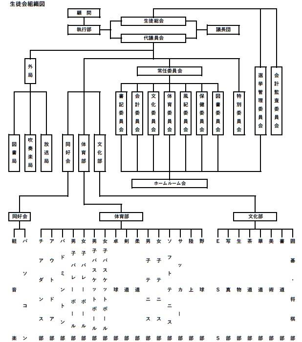
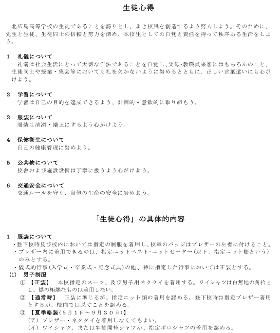
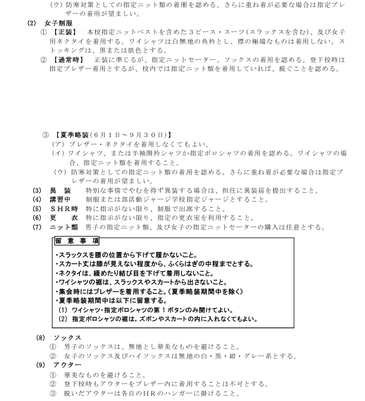
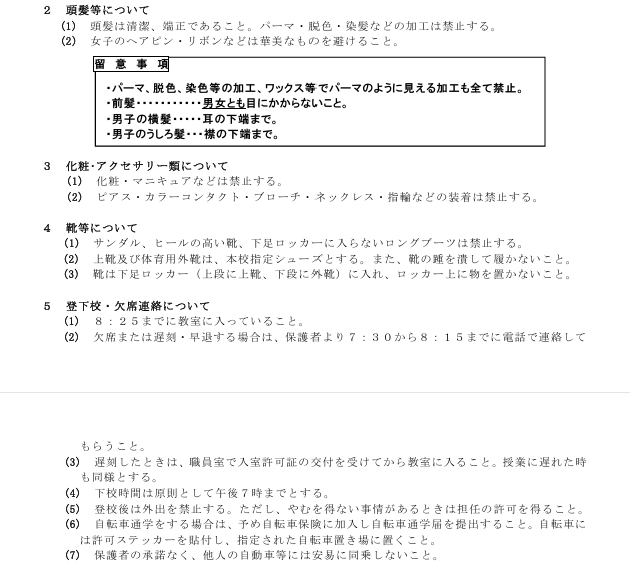
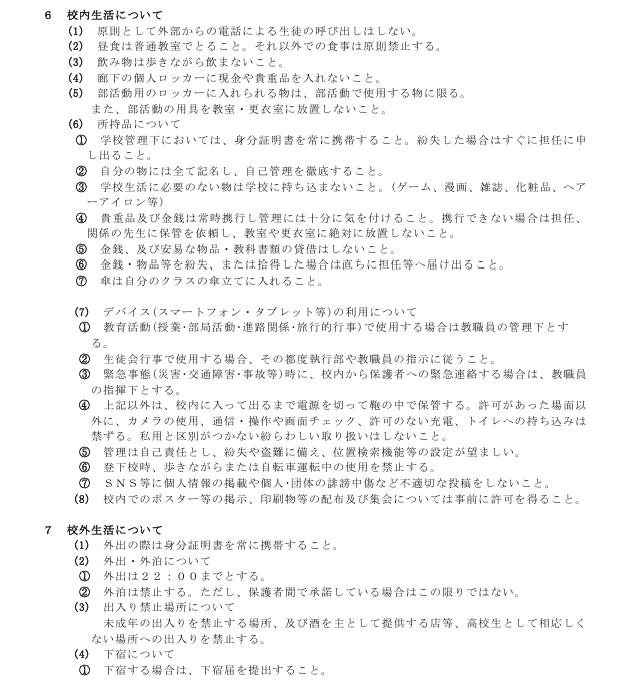
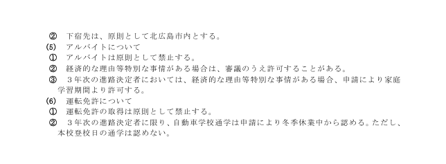

生徒会執行部役職
会長1名
副会長2名
- ①集会時の司会、議事進行
- ②モニター広告の作成
書記長1名
会計長1名
保健委員長1名
- ①学校祭時の特設ゴミステーション設置・運営
- ②ペットボトルキャップの回収・寄付
- ③各種検診時の保健委員指導
- ④保健委員会の運営
体育委員長１名
風紀委員長1名
文化委員長1名
- ①生徒会誌「きたひろ」の作成
- ②学校祭巨大ポスターの作成
- ③文化委員会の運営
BP委員長1名
選挙管理委員長1名
庶務５役・委員長以外の生徒会執行部
- 諸業務 割当の決まっていないその他仕事を行う
- モニター広告
- プリント配布（連絡棚・職員室）
- ホワイトの連絡記入
生徒会執行部のお仕事
各行事の企画・運営年間スケジュールにある生徒会行事の
企画書の作成・運営を行う。
新行事を興したい場合
は年度末の職員会議で配布される次年度スケジュール掲載が必要なので新体制になってすぐ動き出すと間に合うかもしれません。
例年行われている生徒会行事に関しては
各行事を参照。
各HRの委員名簿や部局長・部活動生徒の
名簿を作成し、壮行会や新入生歓迎会の際に活用する。
名簿はいろいろな行事で活用できるので年度が変わったら年次ごとの新クラスが発表され次第データを先生から貰うと良いでしょう。
会計監査は会計長の仕事ですが、年間を通して
部局長会議を行ったり部局への依頼を行います。
行事の際に部局に協力を依頼したい場合は部局長にLINE等で連絡を取るだけでなく、
執行部担当生徒が部局顧問の所へ伺う。
常設委員会（保健/体育/風紀/文化）と特別委員会(BP/選挙管理)の運営を行う。
選挙管理委員会以外は生徒会執行部二所属する委員長が招集・運営を行う。
前期・後期の開始時と終了時には必ず委員会を開き、その期の活動計画に付いて連絡を行う。
組織図
規則類
生徒心得




校内規定集